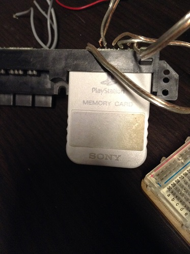
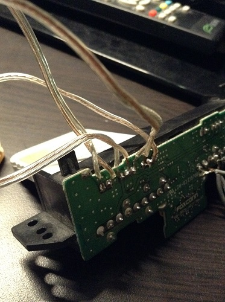
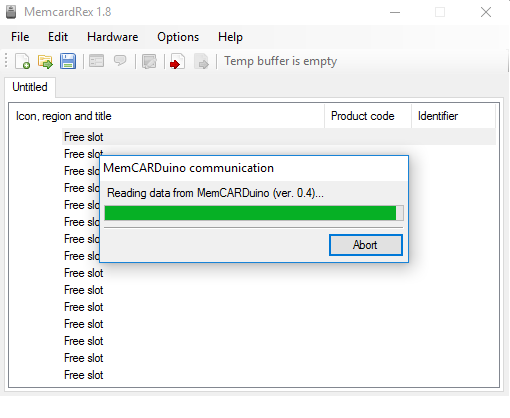
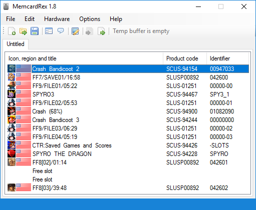
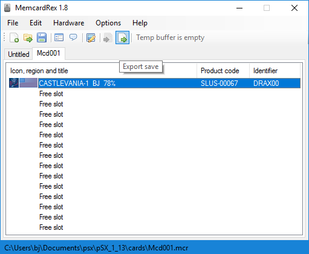
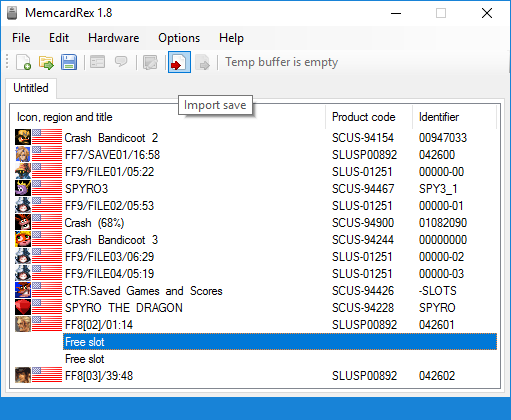
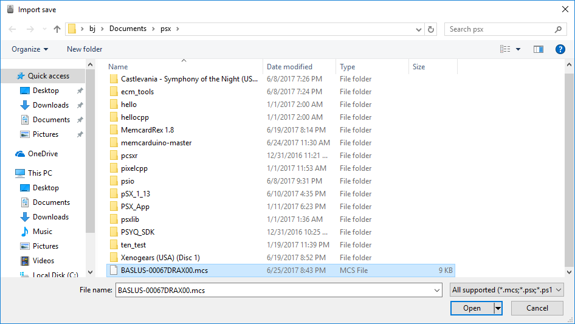
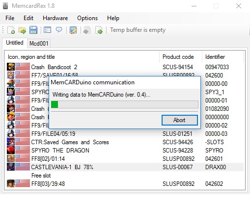
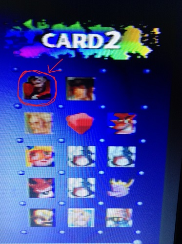
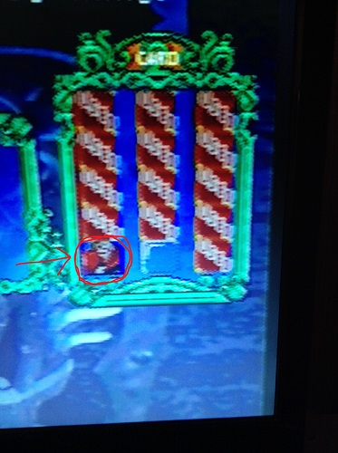

MemCARDuino: Copy PS1 Saves To/From Your Memory Card!
Emulators have their advantages and disadvantages, and sometimes, they just don't seem to work right. No emulator is perfect! So if you want to switch over to hardware, you need a way to take your game save with you.
For the PS1, a cool guy named Shendo created MemCARDuino, which uses an Arduino to read and write data from/to your memory card. If you don't have an arduino, but have a PS2, you can copy your saves through the uLaunchElf file explorer for the PS2. This method requires Free McBoot, a custom firmware that runs off your memory card. There are many ways to install Free McBoot, and a quick google should find you plenty of information.
If you don't have a PS2 (or have a broken one!), this method may be less of a hassle. First, (besides an Arduino), you'll need wire access to your memory cards pins. I used the controller/memory card slots out of a broken PS2:
{kind=link}
Alternatively, you could use the ports from a ps1, or I've seen a '4gamers ps2 memory expansion' with the back cut off used as well (see here) Either way, you'll probably have to do some soldering. The ports from the ps2 were pretty easy to access and are clearly divided into 3 sections just like the memory card:
{kind=link}
Next, plug the wires into their specifed ports in the arduino, following
Shendo's Guide.
If your Arduino isn't an Uno, you might have to use different ports, and change the pin
numbers in this part of Shendo's code (at the top):
//Define pins
#define DataPin 12 //Data
#define CmdPin 11 //Command
#define AttPin 10 //Attention (Select)
#define ClockPin 13 //Clock
#define AckPin 2 //Acknowledge
{kind=link}
{kind=link}
I left the third pin (7.6v external power) unconnected. Shendo and others state that it may be required for some third party cards, but I had no problem with my Pelican or Sony brand cards without it. Also, Shendo's guide says to use a 3.6v voltage divider to Arduino's 5v power, but I connected mine directly and had no issues.
The next step is to load memcarduino onto your Arduino, by opening the *.ino from
Shendo's download in the Arduino IDE. If you used different ports than from Shendo's
guide, then be sure to change the #define numbers from the section of code
above before uploading it!
Finally, to move saves to/from your memory card, you'll need a program called MemcardRex, which is Windows only... (also written by Shendo!)
The first time you run MemcardRex, go to Options->Preferences, and select the COM port for your Arduino. Next, with your memory card inserted, go to Hardware->Read Save Data-> MemCARDuino - this will load the data from your memory card into MemcardRex:
{kind=link}
This took about 30s-1 minute for me. The first time I tried, it just sat there and I had to Abort; it turned out one of my wires on the breadboard was loose, so be sure to check those! You should then have all of the memory card's saves being shown on your screen:
{kind=link}
To use them with an emulator, or just to save them on your computer, go to File->Save, and it will default to a .mcr format. To import a save into your memory card, Open your emulator's memory card file in MemcardRex, Click on the save you want to use, and then click the green arrow (Export Save) at the top of the program, and save the file somewhere:
{kind=link}
Next, go back to your MemCARDuino tab in MemcardRex, select a 'Free slot', click on the red arrow (Import save) at the top of the program, and select the exported save file you just created:
 {kind=link}
{kind=link}
To update the data on your memory card, go to Hardware->Write save data->MemCARDuino. Be careful - this will overwrite EVERY SLOT on your memory card. You have been warned! That being said, if you want your memory card to be a copy of your emulator's, you can skip the last two steps, and directly File->Load the memory card file and then Hardware-> Write save data->MemCARDuino instead.
{kind=link}
And that's it! Here's some pics of me testing my save with Castlevania: SoTN
In the PS1 Bios:
{kind=link}
Loading in game:
{kind=link}